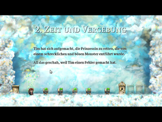
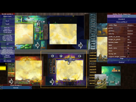

Braid
Dieser Artikel wurde für die folgenden Ubuntu-Versionen getestet:
Ubuntu 14.04 Trusty Tahr
Zum Verständnis dieses Artikels sind folgende Seiten hilfreich:
In Braid  muss der Spieler, mit der Figur Tim, den Verlauf von Raum und Zeit verändern um die Prinzessin zu befreien. In fünf Welten muss Tim mit seinen Fähigkeiten jeweils zwölf Puzzleteile einsammeln. Zur Lösung des Spiels muss die Zeit zurückgespult oder manipuliert werden. Das liebevolle Leveldesign entführt einen in die Welt des Jump'n'Run-Genres...
muss der Spieler, mit der Figur Tim, den Verlauf von Raum und Zeit verändern um die Prinzessin zu befreien. In fünf Welten muss Tim mit seinen Fähigkeiten jeweils zwölf Puzzleteile einsammeln. Zur Lösung des Spiels muss die Zeit zurückgespult oder manipuliert werden. Das liebevolle Leveldesign entführt einen in die Welt des Jump'n'Run-Genres...
|  |  | |
| Tutorial | Einleitung | Leveleditor |
Installation¶
Desura¶
Das Spiel kann über die Internetseite oder den Client zur Spieleliste hinzugefügt und gestartet werden [2].
Humble Store¶
Das Spiel ist im Humble Store käuflich zu erwerben und als .deb-Paket verfügbar. . Nach erfolreicher Installation des Pakets[3] ist das Spiel unter "Anwendungen -> Spiele" zu finden.
Ubuntu Software-Center¶
Braid kann man über das Software-Center käuflich erwerben. Dazu ist eine Registrierung bzw. ein Zugang zu Ubuntu One erforderlich, welchen man sich aber auch während des Zahlungsprozesses über das Software-Center anlegen kann. Anschließend wird Braid automatisch heruntergeladen und installiert. Für zukünftige Updates wird ebenfalls automatisch eine neue Paketquelle hinzugefügt. Für die Zahlung ist jedoch eine Kreditkarte erforderlich.
Konfiguration¶
Da die Auflösung im Spiel nicht geändert werden kann bleibt nur die Änderung des Starters im Menü.
Folgende Optionen sind möglich:
| Auflösung | |
| Option | Beschreibung |
-windowed | Spiel im Fenstermodus starten. |
-height 800 | Fensterhöhe - hier 800px. Andere Werte sind möglich. |
-width 1280 | Fensterbreite - hier 1280. Andere Werte sind möglich. |
-half | Rendern auf 50% der Ursprungsdarstellung. |
-60fps | Überprüfung der Bildwiederholfrequenz bei Spielstart überschreiben (Werte: -60fps, -30fps, -20fps, -15fps, -12fps und -10fps). |
-no_post | Postprocessing deaktiviert. |
-editor | Aktiviert den Editor im Spiel. |
-no_music | Keine Musikwiedergabe |
-no_vsync | Die vertikale Bildwiederholrate wird nicht synchronisiert. Das Spiel wird schneller - flimmert aber. |
-language german | Spiel auf Deutsch spielen |
Eine kleine Auswahl möglicher Auflösungen - weitere Werte findet man auf uniprotokolle.de  :
:
| Bildauflösung | ||
| Abkürzung | Auflösung (Pixel) | Seitenverhältnis |
| SVGA | 800×600 | 4:3 |
| WXGA | 1376×768 | 16:9 |
Deinstallation¶
Je nach Installation über die Paketverwaltung oder im Installationsordner das entsprechende Skript aufrufen [1]:
uninstall-braid.sh
Tastenkürzel¶
| Steuerung | |
| Taste(n) | Beschreibung |
| Esc | Ebene höher / Menü |
| Springen | |
| ↑ + ↓ + ← + → | Charakter bewegen |
| ⇧ | Manipulation der Zeit - Zeit läuft mit normaler Geschwindigkeit rückwärts |
| ⇧ + ↑ / ⇧ + ↓ | Manipulation der Zeit - Vor- und Zurückspulen, Geschwindigkeit beschleunigen |
| 0 | Framerate anzeigen/ausblenden |
| F1 | Zur Levelauswahl. |
| F11 | Leveleditor öffnen/schließen, wenn aktiviert. |
| Druck | Bildschirmfoto erstellen - wird im Installationsordner gespeichert. |
Infobox¶
| Braid | |
| Originaltitel: | Braid |
| Genre: | Puzzle / Jump'n'Run |
| Sprache: | |
| Veröffentlichung: | 2008 |
| Publisher: | Number None |
| Systemvoraussetzungen: | 150 MB Festplattenspeicher |
| Medien: | Download |
| Läuft mit: | nativ |
- Erstellt mit Inyoka
-
 2004 – 2017 ubuntuusers.de • Einige Rechte vorbehalten
2004 – 2017 ubuntuusers.de • Einige Rechte vorbehalten
Lizenz • Kontakt • Datenschutz • Impressum • Serverstatus -
Serverhousing gespendet von